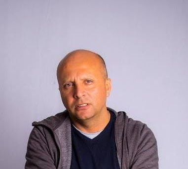

Desarrollador Web
Con 20 años de trayectoria en el dinámico mundo del desarrollo web, he consolidado mi posición como un profesional altamente cualificado. Mi experiencia abarca un amplio espectro de disciplinas, desde el diseño gráfico hasta la programación, lo que me permite ofrecer soluciones integrales y personalizadas a mis clientes.
Habilidades Destacadas:
- Desarrollo Web Completo: Domino los fundamentos del desarrollo web, desde el diseño de interfaces intuitivas hasta la implementación de funcionalidades complejas en programación weeb.
- Diseño Gráfico: Aplico mucha creatividad para el diseño y conocimiento de las últimas tendencias que me permiten crear interfaces visuales atractivas y efectivas.
- Lenguajes de Programación: Domino de múltiples lenguajes de programación brindando la flexibilidad necesaria para abordar cualquier proyecto, desde pequeñas modificaciones hasta desarrollos a gran escala.
- Experto en WordPress y PrestaShop: He demostrado ser un experto en la creación de módulos y plugins personalizados para las populares plataformas WordPress y PrestaShop, lo que me permite ampliar las funcionalidades de estas plataformas y adaptarlas a las necesidades específicas de cada cliente.
- Email: chrishb2000@gmail.com, chbagatulj2000@gmail.com
- Móvil: +34 635 98 34 75